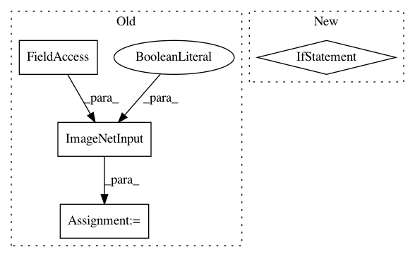

a5364c4875ddbe5d2150a2f822fa916428f29651,models/official/resnet/resnet_main.py,,main,#Any#,359
Before Change
// Input pipelines are slightly different (with regards to shuffling and
// preprocessing) between training and evaluation.
imagenet_train = imagenet_input.ImageNetInput(
is_training=True,
data_dir=FLAGS.data_dir,
transpose_input=FLAGS.transpose_input)
imagenet_eval = imagenet_input.ImageNetInput(
is_training=False,
data_dir=FLAGS.data_dir,
transpose_input=FLAGS.transpose_input)
After Change
is_training=is_training,
data_dir=FLAGS.data_dir,
transpose_input=FLAGS.transpose_input,
use_bfloat16=use_bfloat16) for is_training in [True, False]]
if FLAGS.mode == "eval":
eval_steps = NUM_EVAL_IMAGES // FLAGS.eval_batch_size
In pattern: SUPERPATTERN
Frequency: 3
Non-data size: 4
Instances
Project Name: tensorflow/tpu
Commit Name: a5364c4875ddbe5d2150a2f822fa916428f29651
Time: 2018-04-27
Author: 1517779+sb2nov@users.noreply.github.com
File Name: models/official/resnet/resnet_main.py
Class Name:
Method Name: main
Project Name: tensorflow/tpu
Commit Name: cbef674a4e8553cd3817b94b707a63d2214c7533
Time: 2018-11-09
Author: xiejw0217@gmail.com
File Name: models/experimental/resnet50_keras/resnet50.py
Class Name:
Method Name: main
Project Name: tensorflow/tpu
Commit Name: 21cd0774c8c3d41a8464427c81629075c953e7e3
Time: 2018-09-05
Author: xiejw0217@gmail.com
File Name: models/experimental/keras/resnet50.py
Class Name:
Method Name: main